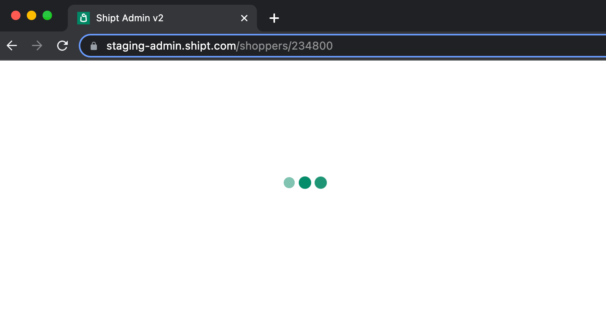
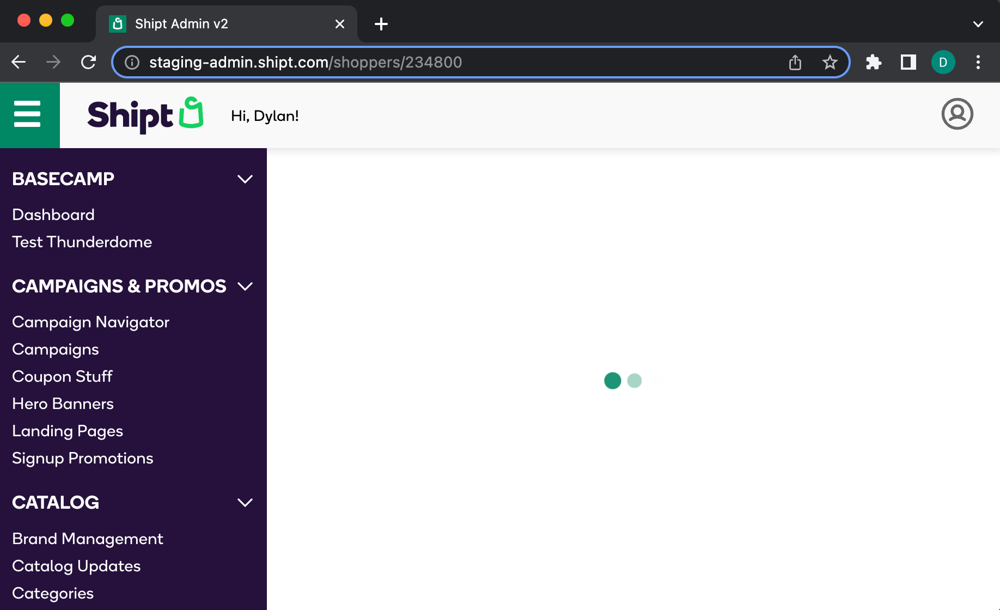

A brief exploration of Shipt Admin's architecture.
Disclaimer: I (Dylan) didn't work on sg1 but hope this information will help someone (and myself) better understand the Shipt Admin architecture.
| Repo | Packages | Notes |
|---|---|---|
|
|
|
Looks like a re-upload of the
|
|
|
|
|
|
|
|
These packages are modified versions of the
react-scripts package. The source-code for each package
lives in the
|
|
|
N/A |
Shipt Admin uses a micro-frontend framework known as sg1 which splits the app into two primary pieces: a parent app (sg1-admin) and whatever module is currently being rendered (sg1-shoppers-module, sg1-orders-module, etc). The main goal of the sg1 framework is to group the different app routes into separate modules that can be built and deployed independently from the parent app. This allows different teams to own different sections of Shipt Admin without ever touching the parent app. This setup also enables the modules to only worry about the content of their pages while common tasks such as auth, theme provision, etc. happen at the parent app level.
The sg1 framework uses a central manifest file that contains a file map for each module. During the module's deployment process, the module's file map in the manifest is updated.
Here's a snippet of the manifest containing the file map for sg1-shoppers-module:
{
"sg1-shoppers-module": {
"version": "1.2.1",
"timestamp": 1663345990887,
"context": "/sg1-shoppers-module/context.87714ac0.js",
"context.map": "/sg1-shoppers-module/context.87714ac0.js.map",
"module": "/sg1-shoppers-module/module.ee54c1e5.js",
"module.map": "/sg1-shoppers-module/module.ee54c1e5.js.map",
"module.ee54c1e5.LICENSE": "/sg1-shoppers-module/module.ee54c1e5.js.LICENSE",
"precache-manifest.b7aa0ae6221ebe12b2550dd19b890d33": "/sg1-shoppers-module/precache-manifest.b7aa0ae6221ebe12b2550dd19b890d33.js",
"service-worker": "/sg1-shoppers-module/service-worker.js"
}
}
Even though this is a web app, you might notice there aren't any HTML
files being output by the module. Instead, there is a
context and module file. Sticking with
sg1-shoppers-module, here's a look at its context file with just the
/shoppers route:
import {
ContextExporter,
ISG1ModuleContext,
IMenuSection,
ISG1Route,
} from '@shipt/nova'
import { name } from '../package.json'
export class Context implements ISG1ModuleContext {
ID = name
// Routes accessible from menu
get Menu(): IMenuSection[] {
return [
{
sort: 1,
name: 'Users',
items: [
{
sort: 2,
name: 'Shoppers',
route: {
path: '/shoppers',
component: 'Shoppers',
options: {
exact: true,
},
},
},
],
},
]
}
// Routes accessible from components, but not in menu
get SubRoutes(): ISG1Route[] {
return [
{
path: '/shoppers',
component: 'Shoppers',
},
]
}
}
ContextExporter.export(new Context())The context file contains metadata about the module and its routes. This tells the sg1 framework which routes are available, which component goes with each route, and what menu items should be added.
Here's the module file for sg1-shoppers-module (again with just the
/shoppers route):
import { ModuleExporter } from '@shipt/nova'
import { withFeatureFlaggedAccess } from '@shipt/sg1-common'
import { withProviders } from 'hooks/withProviders'
import { RedirectToOGDrivers } from './components/Redirects'
import { Shoppers } from 'pages'
const ADMIN_SHOPPER_SERVICE = 'admin_shopper'
ModuleExporter.export(
'Shoppers',
withProviders(
withFeatureFlaggedAccess(
Shoppers,
{
service: ADMIN_SHOPPER_SERVICE,
flagName: 'ng_shopper_search',
},
RedirectToOGDrivers,
),
),
)
The main goal of this file to export the components named in the
context file. In this case, the context file connects the
/shoppers route with the
Whenever an sg1-admin page loads, the sg1 framework downloads the manifest, downloads each module's context file, and generates a list of the available routes which are then rendered by sg1-admin. When one of the routes matches the user's url, the appropriate module file is downloaded and the matching component is rendered.
What about the Shipt create-react-app fork?
Most of the changes in the CRA fork involve dependency sharing which is a benefit but not strictly required in a micro-frontend.
A user visits the sg1-admin app.
Using the sg1 framework, sg1-admin first downloads the manifest containing the file maps for each module. Using the module file maps, each context file is then downloaded.
{
"sg1-orders-module": { ... },
"sg1-referrals-module": { ... },
"sg1-search-boost-module": { ... },
"sg1-shopper-pay-module": { ... },
"sg1-shoppers-module": { ... },
...
}Once the context files have been downloaded, the menu items and list of available routes can be rendered by sg1-admin.

Finally, when the matched route is rendered (/shoppers
in this case), the sg1 framework uses the information from the
context files to download the appropriate module file which
contains the actual React component for this route.
. . .